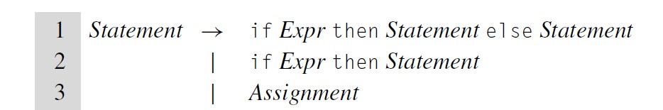
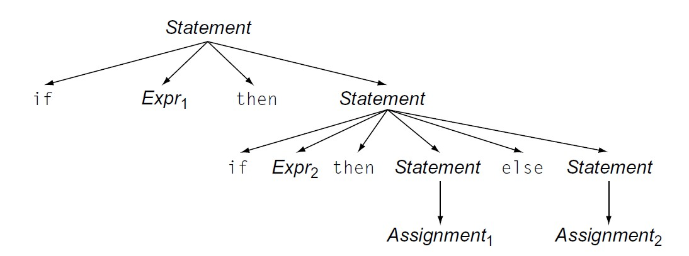
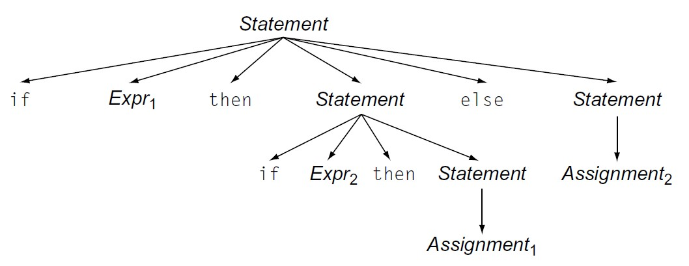
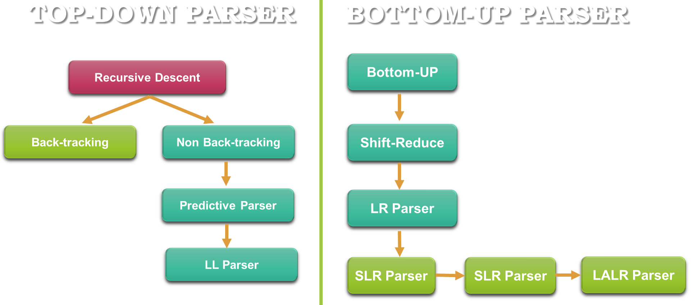
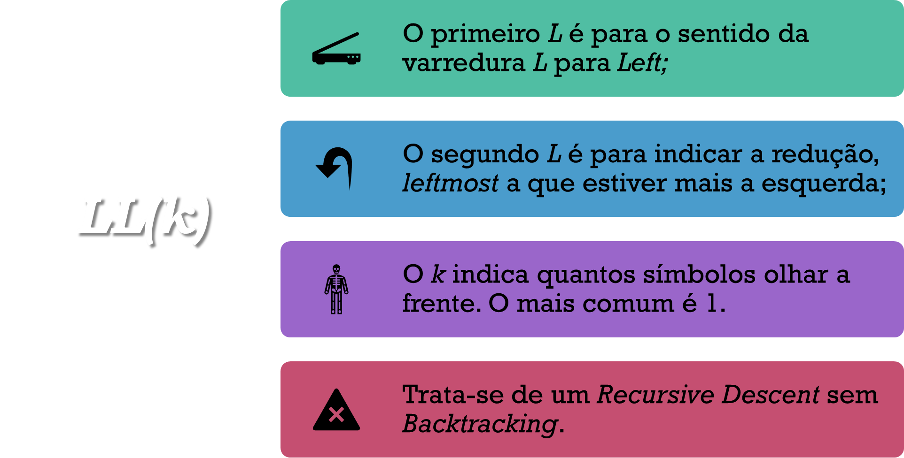

Frank Coelho de Alcantara -2021
Usando o site regex101.com, escreva uma expressão regular capaz de identificar expressões aritméticas contendo apenas as quatro operações $+, - , \times, \div$ com precedência definida por parenteses utilizando identificadores definidos por $[a-z]+$ segundo os seguintes exemplos: $$a + (b - c)$$ $$a \times (b \div c)$$ $$(a \times (b-c))$$
Considerando o conjunto de regras de produção explicitados a seguir, faça a derivação da árvore sintática capaz de identificar a string $(a+b)\times c)$. Para completar este exercício você precisa produzir a estrutura de derivação e a árvore sintática correspondente.
Símbolos à esquerda são os símbolos não terminais, representados por letras latinas maiúsculas $(𝑆, 𝐴, 𝐵, …)$.
Símbolos à direita podem ser terminais, ou não. Símbolos terminais são representados por letras latinas minúsculas ou outros símbolos $(a, b, c, ...)$.
Várias regras $(𝐴\rightarrow \beta_1, 𝐴\rightarrow \beta_2, …, 𝐴\rightarrow \beta_n)$, com um mesmo não terminal do lado esquerdo podem ser reunidas: $𝐴 \rightarrow \beta_1 | \beta_2 | … |\beta_n$.
Strings com terminais e não terminais, quando existirem, são representadas por letras gregas minúsculas $(\Gamma, \Delta, \Phi,...)$.
Strings só de não terminais são representadas por letras latinas mínúsculas $(S, A, B, C, ...)$.
Strings só de terminais são representadas por letras latinas mínúsculas $(w, x, y, z, ...)$.
Um símbolo qualquer, indefinido, que pode ser terminal ou não terminal, será representado por uma letra latina maiúscula $(𝑋, 𝑌, …)$.
A árvore gerada por derivação pode ser usada para caracterizar as gramáticas livres de contexto.
Consideramos equivalentes todas as derivações que correspondem a mesma árvore.
Derivação à esquerda (leftmost derivation): uma regra é sempre aplicada ao primeiro não terminal da cadeia, o que fica mais à esquerda.
Derivação à direita (rightmost derivation): uma regra é sempre aplicada ao último não terminal da cadeia, o que fica mais à direita.
O algoritmo de parser definirá a forma como faremos a derivação. Esta forma define quais tipo de derivação vamos utilizar para substituir símbolos terminais por não terminais, ou vice-versa.
Uma gramática é ambígua se, para uma string $w$ qualquer, existem duas ou mais árvores de derivação distintas, duas ou mais derivações a esquerda ou duas ou mais derivações a direita.
Podemos mostrar que uma gramática é ambígua mostrando que para uma determinada string $w$ existem árvores sintáticas distintas.
A ambiguidade e o comportamento indefinido são dois problemas sérios em computação.
Um exemplo clássico de ambiguidade, com derivação a direita, pode ser tirado da gramática das linguagens derivadas do Algol.
Podemos mostrar que esta gramática é ambígua para strings $if\space\space Expr1 \space\space then \space\space if \space\space Expr2 \space\space then \space\space Assignment1 \space\space else \space\space Assignment2$.
$if\space\space Expr1 \space\space then \space\space if \space\space Expr2 \space\space then \space\space Assignment1 \space\space else \space\space Assignment2$.
 Considerando o fragmento de grámatica apresentado, referente ao $if-else$ do exemplo anterior, refaça as derivações à direita, para o exemplo anterior e comprove a ambiguidade deste fragmento gramatical.
Para: $if\space\space Expr1 \space\space then \space\space if \space\space Expr2 \space\space then \space\space Assignment1 \space\space else \space\space Assignment2$.
Uma forma interessante de restringir as possibilidades de encontrarmos ambiguidades é a criação de gramáticas livres de contexto com regras restritivas.
Podemos classificar as gramáticas de acordo com a dificuldade que será encontrada na criação do parser.
No universo das linguagens de programação imperativas teremos:
$Gramáticas LR(1)\rightarrow Gramáticas LL(1) \rightarrow Gramáticas Regulares$
Sob a classificação de LR(1) está uma quantidade significativa de gramáticas livres de contexto.
O parser em textos gerados segundo as regras de gramáticas LR(1) operam em bottom-up e da esquerda para direita olhando, no mínimo, um símbolo a frente do símbolo que está sendo processado.
Por ser uma gramática simples, e ter muitos parsers disponíveis, é uma das gramáticas mais utilizadas para linguagens de programação imperativas.
Um subconjunto das gramáticas LR(1).
O parser em textos gerados segundo as regras de gramáticas LL(1) operam em top-down e da esquerda para direita olhando, no mínimo, um string a frente do símbolo que está sendo processado.
Neste caso, não é raro encontrarmos parsers personalizados, desenvolvidos de forma manual (fácil).
Um subconjunto das gramáticas LL(1).
São gramáticas cujas regras de produção são limitadas a duas formas: $A \rightarrow a$ ou $A \rightarrow aB$ onde $ \{A,B\} \in N$ e $a \in \Sigma$.
Estas são as gramáticas que geram linguagens que podem ser reconhecidas por uma MEF e que usamos para definir, a criação de lexemas da nossa linguagem.
Não esqueça $MEF \leftrightarrow Regex$

Parser é o artefato de software responsável por validar, ou produzir, uma determinada string de uma linguagem $𝐿$ Segundo a gramática $𝐺$ sobre o alfabeto $\Sigma$.
Para fins didáticos, algoritmos de parser estão divididos em duas grande famílias top-down e bottom-up.
Percorremos da raíz até as folhas, no caso do top-Down, ou das folhas até a raíz no caso do bottom-up.
Se, a qualquer momento, não existir uma regra de produção que permita a derivação, e ainda existirem símbolos não terminais, o parser deve voltar e refazer a árvore; talvez uma das escolhas de regras possa ser alterada.
A essa operação damos o nome de Backtrack.
Se terminamos a string sob análise e ainda existem símbolos não terminais. Ou se, não encontramos uma regra adequada. O algoritmo de parser deve voltar a árvore e refazer as opções que fez para as regras anteriores.
Neste caso, existem duas opções: ou as regras adotadas alternativamente levam a uma árvore perfeita.
Ou o string não é faz parte da linguagem e um erro de sintaxe deve ser emitido
Existem dois algoritmos para varrer uma árvore sintáticas conhecidos por sua eficiência: deep-first e breadth-first.
No deep-first havendo duas opções, armazenamos uma e seguimos com a outra, se algo der errado voltamos neste ponto e seguimos a outra alternativa.
No breadth-first, armazenamos um conjunto de soluções parciais e examinamos estas soluções em busca de soluções melhores eventualmente o conjunto irá conter toda a árvore. Criamos um conjunto para cada opção e vamos eliminando opções ruins.
Classe de parsers que usa um ponteiro apontando para o próximo símbolo na string;
Usam uma classe de gramática especial chamada de LL(k);
O k representa o número de símbolos analisados em cada passo (previstos???).
Definimos gramáticas LL(1) de tal forma que:$$𝑮=\{𝑵,\Sigma, 𝑷, 𝑺\}$$
Onde: $$𝒘 \in \Sigma^∗; 𝑨\in 𝑵; \space\space \alpha, \beta \space\space 𝒆 \space\space \gamma \in (𝑵\cup \Sigma)^∗$$
Cujas derivações serão dadas por:$$𝑺 \rightarrow 𝒘𝑨 \gamma \space\space| \space\space 𝒘 \alpha 𝜸 \space\space| \space\space 𝒘𝒙 \in \Sigma^∗$$
$$ 𝑺 \rightarrow 𝒘𝑨 \gamma \space\space | \space\space 𝒘 \beta \gamma \space\space | \space\space 𝒘𝒚 \in \Sigma^∗$$

Considere a gramática a seguir e encontre a árvore de derivações para $“a + a * a”$:
$𝑆 \rightarrow 𝑆+𝑇$$𝑆 \Rightarrow 𝑆+𝑇;$
$𝑆→𝑇$$\Rightarrow 𝑇+𝑇;$
$𝑇→𝐹$$\Rightarrow 𝐹+𝑇;$
$𝐹→𝑎$$\Rightarrow 𝑎+𝑇;$
$𝑇→𝑇∗𝐹$$\Rightarrow 𝑎+𝑇∗𝐹;$
$𝑇→𝐹$$\Rightarrow 𝑎+𝐹∗𝐹;$
$𝐹→𝑎$$\Rightarrow 𝑎+𝑎∗𝐹;$
$𝐹→𝑎$$\Rightarrow 𝑎+𝑎∗𝑎;$
$𝑆 \rightarrow 𝑆+𝑇$ $𝑆 \Rightarrow 𝑆+𝑇;$
$𝑆→𝑇$$\Rightarrow 𝑇+𝑇;$
$𝑇→𝐹$$\Rightarrow 𝐹+𝑇;$
$𝐹→𝑎$$\Rightarrow 𝑎+𝑇;$
$𝑇→𝑇∗𝐹$$\Rightarrow 𝑎+𝑇∗𝐹;$
$𝑇→𝐹$$\Rightarrow 𝑎+𝐹∗𝐹;$
$𝐹→𝑎$$\Rightarrow 𝑎+𝑎∗𝐹;$
$𝐹→𝑎$$\Rightarrow 𝑎+𝑎∗𝑎;$
Leftmost
$𝑆 \Rightarrow 𝑆+𝑇;$
$\Rightarrow 𝑇+𝑇;$
$\Rightarrow 𝐹+𝑇;$
$\Rightarrow 𝑎+𝑇;$
$\Rightarrow 𝑎+𝑇∗𝐹;$
$\Rightarrow 𝑎+𝐹∗𝐹;$
$\Rightarrow 𝑎+𝑎∗𝐹;$
$\Rightarrow 𝑎+𝑎∗𝑎;$
Rightmost
$𝑆 \Rightarrow 𝑆+𝑇;$
$\Rightarrow 𝑆+𝑇∗𝐹;$
$\Rightarrow 𝑆+𝑇∗𝑎;$
$\Rightarrow 𝑆+𝐹∗𝑎;$
$\Rightarrow 𝑆+𝑎∗𝑎;$
$\Rightarrow 𝑇+𝑎∗𝑎;$
$\Rightarrow 𝐹+𝑎∗𝑎;$
$\Rightarrow 𝑎+𝑎∗𝑎;$
Considere o Exemplo 1 e verifique se as duas derivações produzem a mesma árvore.
Tente encontrar outra derivação para criar uma árvore diferente.
Discuta seus resultados com seus colegas de classe. Este é um processo mecânico de observar a regra e fazer a substituição. Ainda assim, merece ser discutido e praticado.
Lembre-se: ou derivamos à direita ou à esquerda.
O Parser precisa encontrar a Regra de Produção para um símbolo não terminal $N$ qualquer olhando apenas um símbolo terminal $t$ qualquer.
Para encontrar esta regra, podemos usar uma tabela com uma chave que indicará a regra de produção para uma função de derivação a ser definida por $D(N,t)$.
Se usarmos a tabela, o trabalho do parser fica reduzido a análise desta tabela. Isso irá diminuir a complexidade computacional envolvida.
Considere o alfabeto $\Sigma = \{n, +, *, (, )\}$, o seguinte conjunto de Regras de produção e a Tabela D a seguir:
| $n$ | $+$ | $*$ | $($ | $)$ | $\$$ | |
|---|---|---|---|---|---|---|
| $S$ | $1$ | $ $ | $ $ | $1$ | $ $ | $ $ |
| $R$ | $ $ | $3$ | $2$ | $ $ | $2$ | $2$ |
| $T$ | $4$ | $ $ | $ $ | $4$ | $ $ | $ $ |
| $G$ | $ $ | $5$ | $6$ | $ $ | $5$ | $5$ |
| $F$ | $7$ | $ $ | $ $ | $8$ | $ $ | $ $ |
Vamos usar a Tabela D para gerar a árvore sintática abstrata da string "n*n" sem as aspas.
| $n$ | $+$ | $*$ | $($ | $)$ | $\$$ | |
|---|---|---|---|---|---|---|
| $S$ | $1$ | $ $ | $ $ | $1$ | $ $ | $ $ |
| $R$ | $ $ | $3$ | $2$ | $ $ | $2$ | $2$ |
| $T$ | $4$ | $ $ | $ $ | $4$ | $ $ | $ $ |
| $G$ | $ $ | $5$ | $6$ | $ $ | $5$ | $5$ |
| $F$ | $7$ | $ $ | $ $ | $8$ | $ $ | $ $ |
| $Localizado$ | $Pilha$ | $Buffer$ | $Ação$ |
|---|---|---|---|
| $S\$$ | $n*n\$$ | Reduce $S \rightarrow TR$ | |
| $TR\$$ | $n*n\$$ | Reduce $T \rightarrow FG$ | |
| $FGR\$$ | $n*n\$$ | Reduce $F \rightarrow n $ | |
| $nGR\$$ | $n*n\$$ | Encontrei $n$ | |
| $n$ | $GR\$$ | $*n\$$ | Reduce $G \rightarrow *T$ |
| $n$ | $*TR\$$ | $*n\$$ | Encontrei $*$ |
| $n*$ | $TR\$$ | $n\$$ | Reduce $T \rightarrow FG$ |
| $n*$ | $FGR\$$ | $n\$$ | Reduce $F \rightarrow n$ |
| $n*$ | $nGR\$$ | $n\$$ | Encontrei $n$ |
| $n*n$ | $GR\$$ | $\$$ | Reduce $G \rightarrow \varepsilon $ |
| $n*n$ | $R\$$ | $\$$ | Reduce $R \rightarrow \varepsilon $ |
| $n*n$ | $\$$ | $\$$ | Fim |
| $n$ | $+$ | $*$ | $($ | $)$ | $\$$ | |
|---|---|---|---|---|---|---|
| $S$ | $1$ | $ $ | $ $ | $1$ | $ $ | $ $ |
| $R$ | $ $ | $3$ | $2$ | $ $ | $2$ | $2$ |
| $T$ | $4$ | $ $ | $ $ | $4$ | $ $ | $ $ |
| $G$ | $ $ | $5$ | $6$ | $ $ | $5$ | $5$ |
| $F$ | $7$ | $ $ | $ $ | $8$ | $ $ | $ $ |
Começamos com $S$, temos $D(S,n)=1$, expandimos $S$ usando $S \rightarrow TR$;
Temos $D(T,n)=4$, expandimos $T \rightarrow FG$;
Temos $D(F,n)=7$, expandimos $F \rightarrow n$;
Chegamos no $n$ mudamos o lookahead para $*$;
Temos $D(G,*)=6$, expandimos $G \rightarrow *T$;
Chegamos no $*$ mudamos o lookahead para $n$;
Temos $D(T,n)=4$, expandimos $T \rightarrow FG$;
Temos $D(F,n)=7$, expandimos $F \rightarrow n$;
Chegamos no $n$ mudamos o lookahead para $\$$;
Temos $D(G,\$)=5$, expandimos $G \rightarrow \varepsilon$;
Temos $D(R,\$)=2$, expandimos $R \rightarrow \varepsilon$;
Começamos com $S$, temos $D(S,n)=1$, expandimos $S$ usando $S \rightarrow TR$;
Temos $D(T,n)=4$, expandimos $T \rightarrow FG$;
Temos $D(F,n)=7$, expandimos $F \rightarrow n$;
Chegamos no $n$ mudamos o lookahead para $*$;
Temos $D(G,*)=6$, expandimos $G \rightarrow *T$;
Chegamos no $*$ mudamos o lookahead para $n$;
Temos $D(T,n)=4$, expandimos $T \rightarrow FG$;
Temos $D(F,n)=7$, expandimos $F \rightarrow n$;
Chegamos no $n$ mudamos o lookahead para $\$$;
Temos $D(G,\$)=5$, expandimos $G \rightarrow \varepsilon$;
Temos $D(R,\$)=2$, expandimos $R \rightarrow \varepsilon$;
Considere o alfabeto $\Sigma = \{n, +, *, (, )\}$, o seguinte conjunto de Regras de produção e a Tabela D a seguir:
| $n$ | $+$ | $*$ | $($ | $)$ | $\$$ | |
|---|---|---|---|---|---|---|
| $S$ | $1$ | $ $ | $ $ | $1$ | $ $ | $ $ |
| $R$ | $ $ | $3$ | $2$ | $ $ | $2$ | $2$ |
| $T$ | $4$ | $ $ | $ $ | $4$ | $ $ | $ $ |
| $G$ | $ $ | $5$ | $6$ | $ $ | $5$ | $5$ |
| $F$ | $7$ | $ $ | $ $ | $8$ | $ $ | $ $ |
use para gerar a árvore sintática abstrata da string "n+n*n" sem as aspas. Entregue Aqui